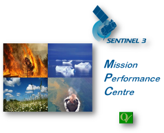
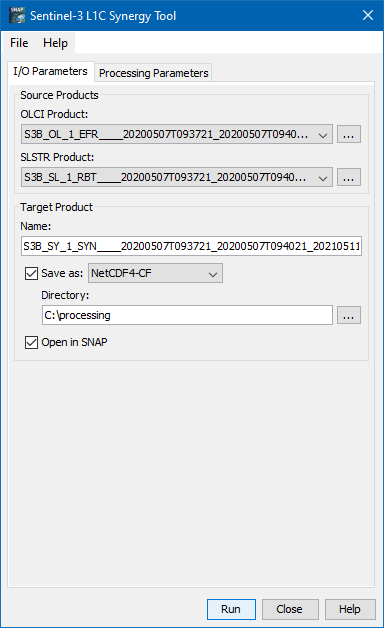
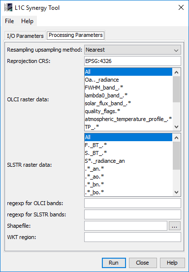

| Sentinel-3 L1C SYN Tool |
The current Sentinel 3 ground segment includes a synergy branch where Level 1b data from two instruments onboard Sentinel 3, namely OLCI and SLSTR, are commonly processed to a Level 2 product, containing aerosol and surface reflectance data.
User demand showed that there is an additional need to obtain a product where the two Level 1b data streams (TOA radiances or reflectances) are merged and collocated, and which allows them an individual Level 2 processing. This product shall be called Level 1C SYN.
 |


> gpt L1CSYN -h
Usage:
gpt L1CSYN [options]
Description:
Sentinel-3 OLCI/SLSTR L1C SYN Tool
Source Options:
-SolciProduct=<file> OLCI source product
This is a mandatory source.
-SslstrProduct=<file> SLSTR source product
This is a mandatory source.
Parameter Options:
-PbandsOlci=<string,string,string,...> Predefined regular expressions for selection of OLCI bands in the output product. Multiple selection is possible.
Value must be one of 'All', 'Oa.._radiance', 'FWHM_band_.*', 'lambda0_band_.*', 'solar_flux_band_.*', 'quality_flags.*', 'atmospheric_temperature_profile_.*', 'TP_.*', 'horizontal_wind.*', 'total_.*', 'humidity', 'sea_level_pressure', 'O.*A', 'S.*A'.
Default value is 'All'.
-PbandsSlstr=<string,string,string,...> Predefined regular expressions for selection of OLCI bands in the output product. Multiple selection is possible.
Value must be one of 'All', 'F._BT_.*', 'S._BT_.*', 'S*._radiance_an', '.*_an.*', '.*_ao.*', '.*_bn.*', '.*_bo.*', '.*_bn.*', '.*_co.*', '.*_cn.*','*_fn.*', '*_fo.*', '.*_tn.*', '.*_tx.*'.
Default value is 'All'.
-PgeoRegion=<string> The subset region in geographical coordinates using WKT-format,
e.g. POLYGON((<lon1> <lat1>, <lon2> <lat2>, ..., <lon1> <lat1>))
(make sure to quote the option due to spaces in <geometry>).
If not given, the entire scene is used.
-PolciRegexp=<string> Regular expressions (comma-separated) to set up selection of OLCI bands. It has priority over OLCI raster data selection. Will not be considered if empty
-PstayOnOlciGrid=<boolean> If this parameter is set to true, the final product will be provided on the OLCI image grid. Default value is 'False'.
-PreprojectionCRS=<string> The CRS used for the reprojection. If set to None or left empty, no reprojection will be performed.
Default value is 'EPSG:4326'.
-PshapeFile=<file> Optional file which may be used for selecting subset. This has priority over WKT GeoRegion.
-PslstrRegexp=<string> Regular expressions (comma-separated) to set up selection of SLSTR bands. It has priority over SLSTR raster data selection. Will not be considered if empty
-Pupsampling=<string> The method used for interpolation (upsampling to a finer resolution).
Value must be one of 'Nearest', 'Bilinear', 'Bicubic'.
Default value is 'Nearest'.
Graph XML Format:
<graph id="someGraphId">
<version>1.0</version>
<node id="someNodeId">
<operator>L1CSYN</operator>
<sources>
<olciProduct>${olciProduct}</olciProduct>
<slstrProduct>${slstrProduct}</slstrProduct>
</sources>
<parameters>
<stayOnOlciGrid>false</stayOnOlciGrid>
<upsampling>string</upsampling>
<reprojectionCRS>string</reprojectionCRS>
<bandsOlci>string,string,string,...</bandsOlci>
<bandsSlstr>string,string,string,...</bandsSlstr>
<olciRegexp>string</olciRegexp>
<slstrRegexp>string</slstrRegexp>
<shapeFile>file</shapeFile>
<geoRegion>string</geoRegion>
</parameters>
</node>
</graph>
A complete command line call (on windows) might look like the following:
> gpt L1CSYN -PbandsOlci="Oa.._radiance,FWHM_band_.*,lambda0_band_.*" -PbandsSlstr=".*_an.*,.*_tn.*,.*_tx.*" -t "c:\output\S3_L1C_SYN.nc" -SolciProduct="c:\input\S3A_OL_1_EFR____20170313T110342_20170313T110642_20170314T162839_0179_015_208_2520_LN1_O_NT_002.SEN3"
-SslstrProduct="S3A_SL_1_RBT____20170313T110343_20170313T110643_20170314T172757_0179_015_208_2520_LN2_O_NT_002.SEN3"